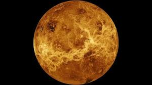

|

Venüs
Venüs, Güneş’e en yakın ikinci gezegen olup büyüklük ve yapısı bakımından Dünya’ya oldukça benzer. Bu nedenle bazen “Dünya’nın ikizi” olarak adlandırılır.
Ancak Venüs’ün yüzey koşulları, yaşam için son derece elverişsizdir. Kalın atmosferi büyük oranda karbondioksitten oluşur ve güçlü bir sera etkisi yaratır. Bu etki nedeniyle Venüs, Güneş Sistemi’nin en sıcak gezegenidir; yüzey sıcaklığı 460°C’ye kadar ulaşır ve bu, kurşunu bile eritebilecek bir sıcaklıktır.
Venüs’ün atmosferinde yoğun bulutlar bulunur. Bu bulutlar, sülfürik asit damlacıklarından oluşur ve gezegenin yüzeyini tamamen kaplayarak dışarıdan
görünmesini engeller. Atmosferdeki bu kalın bulut tabakası, Güneş ışınlarını yansıttığı için Venüs gökyüzünde oldukça parlak görünür. Bu nedenle sabah
erken saatlerde veya gün batımından hemen sonra “Sabah Yıldızı” ya da “Akşam Yıldızı” olarak adlandırılır.
Venüs’ün en dikkat çekici özelliklerinden biri, dönüş yönünün diğer gezegenlerin tersine olmasıdır. Yani Venüs, Güneş etrafında saat yönünün tersine
dönerken, kendi ekseni etrafında saat yönünde döner. Bu yüzden Venüs’te Güneş batıdan doğar, doğudan batar. Ayrıca kendi ekseni etrafında çok yavaş döner;
bir Venüs günü, bir Venüs yılından bile uzundur.
Yüzeyi volkanlarla, lav düzlükleriyle ve dağlarla kaplıdır. Yüksek sıcaklık ve basınç nedeniyle, yüzeyde sıvı halde su bulunmaz. Bilim insanları,
Venüs’ün geçmişte daha ılıman bir iklime sahip olabileceğini, ancak aşırı sera etkisinin gezegeni bugünkü yaşanmaz hale getirdiğini düşünmektedir.
Venüs’ün uydusu yoktur. Yine de Dünya’ya en yakın gezegen olması nedeniyle uzun yıllardır gözlem ve araştırmaların odak noktası olmuştur. Gökyüzündeki
parlak görünümü, hem eski uygarlıkların ilgisini çekmiş hem de modern çağda bilim insanlarına gezegen atmosferi ve iklim değişimi üzerine önemli veriler
sağlamıştır.
|